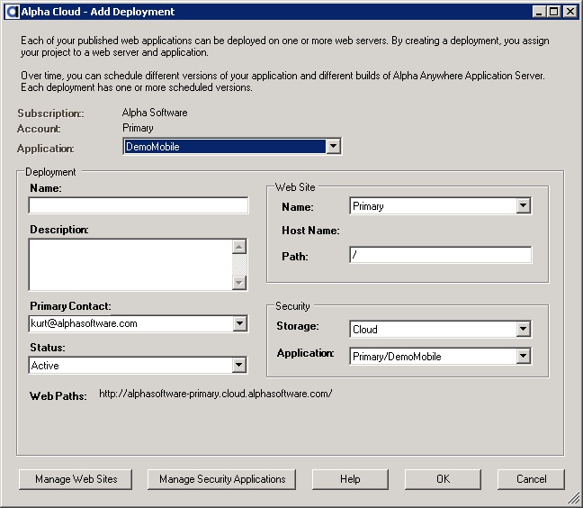

Click the button entitled "Add Deployment" on the right side of the dialog.
The dialog below will be displayed.

About Deployments and Schedules
Deployment Schedule Properties
Viewing and Updating Deployments
Managing Deployment Properties
A Deployment is the cloud resource you manage to actually put your published web project to work on the web. You can create one or more deployments for an application. Each deployment has a unique web site and a virtual path that is different from all other deployments on the internet.
Each deployment has a single header that defines elements of a deployment that are not likely to change over time. This includes the primary contact, the web site, application path, and options for storing users and groups when deployed.
The Deployment Schedule is a set of items that each have a unique and non-overlapping available start and stop datetime. Each item in the schedule represents the intended deployment options during that specific time range. As a result, you can "schedule" your application to be deployed with a specific version and a specific build of Alpha Anywhere Application Server for IIS at one time, and then "schedule" a different version of your application at another time. Using this mechanism, you can roll application versions and server builds forward or backward as necessary. Scheduling a deployment is all that is required to make the change.
Note: When you use the basic publish settings dialog or check the box labeled "Deploy immediately when published?" in the advanced publish settings dialog, each time your web project is published to your Alpha Cloud application, it will then be deployed immediately. A schedule item is automatically created for you in this case. You can see the scheduled deployment when you visit the "Manage Deployments" dialog discussed below.
This value determines where your published users and groups are stored.
Users and groups stored in the Alpha Cloud security database are grouped by security application.
The default name for deployment security combines the account, the application and the deployment name into a unique key. This isolates each deployment from any others in your subscription. At deployment time, Alpha Cloud further isolates your security applications from those of other subscriptions.
Security applications are maintained at the subscription level. You can create your own security applications and use them for one or more deployments. Important: Sharing a security application across deployments will cause them to share session state and login information. It is important that you understand the implications of doing this.
Note: Sharing security applications across subscriptions is not supported on Alpha Cloud.
In the most common case, you will access web pages and resources using a URL that has a single "/" after the host name (such as https://www.mydomain.com/index.a5w"). The default path is "/". You can deploy multiple applications to a web site by providing each application with a unique path that is different from any other on that site.
For example, if you create a deployment with the path "/", you can create another with the path "/Accounting". The "/Accounting" application deployment will be accessed on the same web siting using a URL such as "https://www.mydomain.com/Accounting/index.a5w".
The build number of Alpha Anywhere Application Server for IIS that you want to run your deployed application with. You can also choose the current released build and the current pre-release build number from dialog lists by name. The number will be substituted for you at the time you set it.
Note: Alpha Cloud does not automatically change the build for your deployed applications. It is important that you thoroughly test each new build with your application before using it in production.
Tip: You can create a deployment with a different path to test new builds of Alpha Anywhere before deploying them to a production site. Maintaining a test site is a good idea for your own development as well, and Alpha Cloud makes it easy to set one up.
For each schedule item, you can choose how you want to publish users and groups.
The default is Preserve; which will only publish users and groups if the selected security application on the deployment has no users and groups in it at the time the deployment is pushed to the Alpha Cloud. Options for publishing users and groups are:
Once you have published an application to the Alpha Cloud, it can be deployed. The deployment header must be created in order to schedule deployment of your application to a web site.
Click the button entitled "Add Deployment" on the right side of the dialog.
The dialog below will be displayed.
To view and update existing deployments:
Use the drop down above the list entitled "Schedule" to select the filter you want to apply to schedule items.
You can choose from:
When you have finished making changes, click "Apply Changes" to update Alpha Cloud.
Notes:
Note: All valid web paths are displayed near the middle of the dialog for the selected deployment. You can copy any of the paths to the clipboard and paste them into a browser to access your deployed applications.
Web projects you create in the Alpha Anywhere development environment generally include one or more connection strings for ADO, Alpha DAO, or Storage. The connection strings you define in the Alpha Anywhere development environment are automatically published to Alpha Cloud along with your web project. After your application is published, you can view and edit connection strings and add constants you would like to be available to your running application.
Important Note: Connection strings are set in the Alpha Anywhere publish profile. These connection string values will always replace existing values in Alpha Cloud each time you republish your application.
You can override constants and connection strings for each deployment of your application. Those overrides will take precedence when your application is deployed.
Managing Application Constants
Managing ADO Connection Strings
Managing Alpha DAO Connection Strings
Managing Storage Connection Strings
Open the the Manage Deployments Dialog as discussed above in Viewing and Updating Deployments.
Select the deployment you want to manage properties for.
Click on the button labeled "Manage Properties".
The Manage Deployment Properties dialog will display.
Select "Application Constant" from the properties drop down.
To add a new constant:
Click the name field of the new row (the row that has a * to the left) and select the name you want to override from the list of application values.
Tab into or click the value field of the same row and enter the value you want to set.
To edit an existing value:
Click the value field of the same row and enter the value you want to set.
Note: Constants can not be deleted, but can be disabled. Check the Show Disabled Properties check box to show the status column and update properties to "Active" or "Disabled".
When you have finished making changes, click "Apply Changes" to update the cloud.
To undo your changes instead of saving them, click "Discard Changes" to reset the data.
Open the the Manage Deployments Dialog as discussed above in Viewing and Updating Deployments.
Select the deployment you want to manage properties for.
Click on the button labeled "Manage Properties".
The Manage Deployment Properties dialog will display.
Select "ADO Connection String" from the properties drop down.
To add a connection string:
Click the name field of the new row (the row that has a * to the left) and select the name you want to override from the list of application values.
Tab into or click the value field of the same row and enter the value you want to set.
To edit an existing value:
Click the value field of the same row and enter the value you want to set.
Note: Connection strings can not be deleted, but can be disabled. Check the Show Disabled Properties check box to show the status column and update properties to "Active" or "Disabled".
You can also click the button in the row labed "Build..." to open the ADO connection string dialog.
When you have finished making changes, click "Apply Changes" to update the cloud.
To undo your changes instead of saving them, click "Discard Changes" to reset the data.
Open the the Manage Deployments Dialog as discussed above in Viewing and Updating Deployments.
Select the deployment you want to manage properties for.
Click on the button labeled "Manage Properties".
The Manage Deployment Properties dialog will display.
Select "Alpha DAO Connection String" from the properties drop down.
To add a connection string:
Click the name field of the new row (the row that has a * to the left) and select the name you want to override from the list of application values.
Tab into or click the value field of the same row and enter the value you want to set.
To edit an existing value:
Click the value field of the same row and enter the value you want to set.
Note: Connection strings can not be deleted, but can be disabled. Check the Show Disabled Properties check box to show the status column and update properties to "Active" or "Disabled".
You can also click the button in the row labed "Build..." to open the Alpha DAO connection string dialog.
When you have finished making changes, click "Apply Changes" to update the cloud.
To undo your changes instead of saving them, click "Discard Changes" to reset the data.
Open the the Manage Deployments Dialog as discussed above in Viewing and Updating Deployments.
Select the deployment you want to manage properties for.
Click on the button labeled "Manage Properties".
The Manage Deployment Properties dialog will display.
Select "Storage Connection String" from the properties drop down.
To add a connection string:
Click the name field of the new row (the row that has a * to the left) and select the name you want to override from the list of application values.
Tab into or click the value field of the same row and enter the value you want to set.
To edit an existing value:
Click the value field of the same row and enter the value you want to set.
Note: Connection strings can not be deleted, but can be disabled. Check the Show Disabled Properties check box to show the status column and update properties to "Active" or "Disabled".
You can also click the button in the row labed "Build..." to open the storage connection string dialog.

When you have finished making changes, click "Apply Changes" to update the cloud.
To undo your changes instead of saving them, click "Discard Changes" to reset the data.
{kind=link}